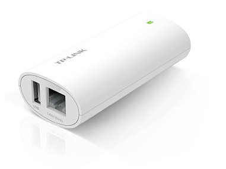

OpenWrt is a Linux distribution for small embedded devices like routers. What is the advantage of using small embedded device with OpenWrt and whsnbg as MQTT broker-gateway over the regular computer? Please see the pictures below. These pictures are the fragments of the network topology diagram from here:
Two devices (border-router node and MQTT broker-gateway) and a wired connection between them are required to connect LAN and WPAN.
The first device is a border-router node. The main role of the border-router is to transfer data from WPAN to normal IPv4 SLIP connection and back. It must be in the active state (ready for potential incoming transmissions from battery powered sensors and ac adapter powered actuators) all the time. It can either be a CC2531 USB dongle or a regular CC2530 module:
The CC2531 USB dongle is connected to the gateway by USB, the CC2530 module is connected by UART. In any case the length of the connecting wires should be as small as possible.
The second device can be any regular computer with Linux, Windows or POSIX-compliant OS that has support for IPv4, Ethernet and SLIP protocols. It must be on and whsnbg must be run all the time. The role of whsnbg is to transfer MQTT(MQTT-SN) data from wireless sensors and actuators to the database server and user computer and back. The best way is to use small embedded device with OpenWrt as the second device. Why?
TP-Link TL-WR703N, TL-MR3020 and TL-MR10U have been tested:
TP-Link TL-WR703N
TP-Link TL-MR3020

TP-Link TL-MR10U